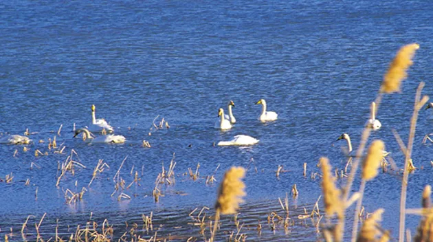
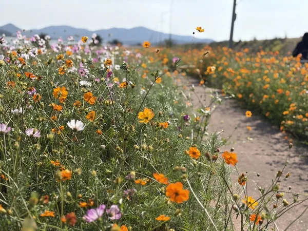
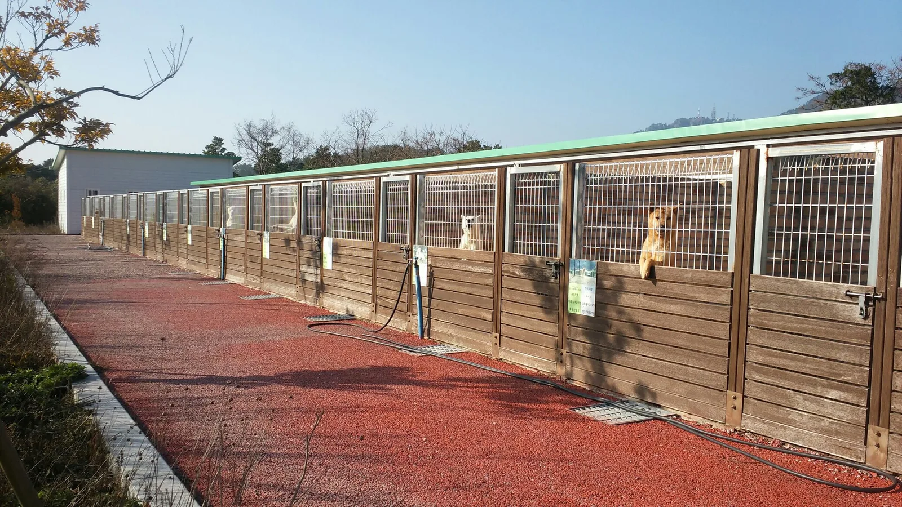

▲ 백조호수공원에서 나리방조제까지 이어지는 4.4km 산책로. 코스모스가 방조제 둑을 따라 길게 이어지고 그 끝으로 바다가 보인다 ⓒ 진도군
전남 진도군 진도읍 수유리, 백조호수공원에서 나리방조제까지 이어지는 4.4km 산책로가 가을꽃으로 물들었다. 진도군은 2026년 9월 21일부터 10월 5일까지 15일간 이 구간 일원에서 '2026년 백조호수공원 가을꽃 행사'를 연다. 그런데 정작 이 공원에 이름을 준 주인공, 백조(고니)는 지금 이 자리에 없다. 백조는 11월은 돼야 돌아오는 겨울 철새이기 때문이다. 이 기사는 백조호수공원이 왜 그런 이름을 갖게 됐는지부터, 2026년 가을꽃 행사 볼거리, 가는 법·주차, 그리고 진도대교·울돌목·진도개테마파크로 이어지는 진도만의 연계 여행 코스까지 순서대로 정리했다.
1. 백조호수공원은 왜 '백조'일까 — 천연기념물 제101호 고니류 도래지

▲ 진도읍 수유리 일대 담수호에서 겨울을 나는 고니(백조) 무리. 백조호수공원이라는 이름은 이 새들에서 왔다 ⓒ 진도군청
백조호수공원이 자리한 진도읍 수유리 해안과 간척지 담수호 일대는 1962년 12월 7일 천연기념물 제101호 '진도 고니류 도래지'로 지정됐다. 고니는 유럽·러시아·몽골·중국 등지에서 번식한 뒤 겨울이면 남쪽으로 내려와 월동하는 대형 철새로, 옛말로는 백조라 불렸다. 진도는 우리나라 서남해 해상에서 고니가 겨울을 날 수 있는 유일한 지역으로 꼽히며, 예로부터 풍년을 예고하는 서조(瑞鳥)로 여겨졌다. 1995년 겨울에는 세계적 희귀조인 황새까지 찾아와 학계의 주목을 받기도 했다.
다만 고니의 월동 시기는 11월부터 이듬해 2월까지다. 즉 9월 하순에 열리는 이번 가을꽃 행사 기간에는 백조를 볼 수 없다는 뜻이다. 공원 이름과 계절 행사가 서로 다른 계절의 이야기를 하고 있는 셈이다. 코스모스를 보러 갔다가 호수에 새 한 마리 없다고 실망할 필요는 없다 — 그저 방문 시기가 다를 뿐이다. 백조를 직접 보고 싶다면 늦가을~겨울에 다시 찾는 편을 권한다.
최근에는 간척으로 먹이터가 줄면서 고니 무리가 여러 지역으로 분산되는 경향도 나타나고 있어, 백조호수공원과 나리방조제 담수호는 이들이 쉬어갈 수 있는 몇 안 되는 휴식처로서 의미가 더 커지고 있다.
진도군청 관광문화에서 고니류 도래지 안내 확인 가능2. 2026년 가을꽃 행사 — 4.4km 꽃길과 프로그램

▲ 나리방조제 산책로 변에 만개한 코스모스와 가을꽃. 주황·분홍·흰색 꽃이 뒤섞여 핀다 ⓒ 진도군
진도군 공원관리사업소는 백조호수공원에서 나리방조제까지 이어지는 4.4km 구간에 코스모스를 비롯한 가을꽃을 조성했다. 코스모스는 지난 7월 14일 파종한 뒤 두 달 넘게 제초와 관수 작업을 거쳐 개화 시기에 맞춰 관리해왔다. 상반기 봄꽃 행사(왕원추리·수레국화 등)에는 약 6,000명이 다녀갔는데, 가을 행사는 이보다 더 긴 산책 구간과 다채로운 프로그램으로 규모를 키웠다.
| 항목 | 내용 |
|---|---|
| 기간 | 2026년 9월 21일 ~ 10월 5일 (15일간) |
| 장소 | 백조호수공원 ~ 나리방조제 일원, 산책로 4.4km |
| 주요 프로그램 | 10월 3일~5일 연휴 집중 — 음악극, 갈라콘서트, 버블마술쇼, 통기타 공연, 꽃길 관람버스 |
| 편의시설 | 휠체어 대여(신규), 진도 특산품 판매장, 세대별 포토존 |
| 위치 | 전남 진도군 진도읍 수유리 일원 |
특히 꽃길 관람버스는 4.4km 전 구간을 걷기 부담스러운 방문객을 위한 배려로, 거동이 불편한 어르신이나 어린 자녀를 동반한 가족 단위 방문객에게 유용하다. 10월 3~5일 연휴 기간에는 공연과 체험 프로그램이 몰려 있으니, 조용한 산책을 원한다면 평일 오전 방문이 낫고, 축제 분위기를 즐기고 싶다면 연휴 기간에 맞춰 계획하는 편이 좋다.
3. 가는 법·주차
백조호수공원은 전남 진도군 진도읍 수유리 일원에 있으며, 진도읍 시외버스터미널에서 차로 약 10~15분(7~10km 내외) 거리다. 목포에서 진도대교를 건너 진도읍 방향으로 들어온 뒤 수유리 방면으로 진입하면 된다. 나리방조제까지 이어지는 산책 구간이 길게 뻗어 있는 만큼, 백조호수공원 쪽과 나리방조제 쪽 중 어느 방향에서 걷기 시작할지 미리 정해두면 동선을 짜기 편하다. 행사 기간에는 임시 주차 공간이 늘어나지만, 연휴 기간 오전 방문객이 몰리는 만큼 여유 있게 도착하는 편을 권한다.
4. 진도 연계 여행 코스 — 진도대교·울돌목·진도개테마파크
백조호수공원만 보고 돌아가기엔 진도는 볼거리가 압축돼 있는 섬이다. 특히 진도대교와 울돌목은 백조호수공원에서 차로 20분 안팎이면 닿을 수 있어, 가을꽃 행사와 묶어 하루 코스를 짜기에 알맞다.

▲ 야간 조명이 켜진 진도대교. 다리 아래가 바로 명량해전의 무대였던 울돌목이다 ⓒ 대한민국 구석구석(한국관광공사)
울돌목은 해남과 진도 사이 폭 294m 남짓한 좁은 해협으로, 이순신 장군이 13척의 배로 130여 척의 일본 수군을 물리친 명량대첩의 실제 무대다. 물살이 부딪히는 소리가 마치 우는 것 같다 하여 '울돌목'이라는 이름이 붙었다. 진도대교 아래로 내려가면 소용돌이치는 물살을 가까이서 볼 수 있는 전망 계단이 마련돼 있다.
▲ 진도대교 교각 아래 전망 데크에서 내려다본 울돌목. 좁은 해협을 빠르게 통과하는 물살이 소용돌이를 만든다 ⓒ Wikimedia Commons
진도대교 옆 망금산 정상에는 명량대첩 승전을 기념해 세운 진도타워(높이 60m, 지상 7층)가 있어 울돌목과 진도대교를 한눈에 내려다볼 수 있다. 조금 더 안쪽으로 들어가면 조선 후기 남종화의 대가 소치 허련이 만년을 보낸 운림산방이 있는데, 연못에 비친 첨찰산 풍경이 한 폭의 수묵화 같아 사진 명소로도 꼽힌다.
진도에서만 볼 수 있는 또 하나의 명물은 진돗개다. 진도읍 동외리의 진도개테마파크는 진도개 보호·연구·홍보를 위해 조성된 시설로, 진도개선수촌과 홍보관, 미니동물농장, 놀이터 등을 갖추고 있다. 국가무형유산이자 천연기념물로 지정된 진도개를 가까이서 볼 수 있는 곳이라, 백조·코스모스·진돗개까지 진도 고유의 콘텐츠를 하루에 묶어볼 수 있는 구성이 된다.

▲ 진도개테마파크의 견사. 목책 창살 사이로 얼굴을 내민 진돗개들을 볼 수 있다 ⓒ Wikimedia Commons
5. 방문 팁 — 이것만은 확인하고 가자
가을꽃 행사 기간이 짧고(15일간) 방문객이 연휴에 몰리는 만큼, 몇 가지만 미리 확인해두면 실망 없이 다녀올 수 있다. 첫째, 앞서 설명했듯 이 시기엔 백조를 볼 수 없다 — 코스모스와 진도 풍경을 보러 가는 여행이지, 새를 보러 가는 여행이 아니라는 점을 기억해두자. 둘째, 4.4km 전 구간을 왕복하면 상당한 거리이므로, 시간이 넉넉하지 않다면 꽃길 관람버스를 이용하거나 한쪽 구간만 걷고 돌아오는 식으로 동선을 조절하는 편이 낫다. 셋째, 진도대교·울돌목·진도개테마파크·운림산방까지 묶으면 하루 일정으로 다소 빠듯할 수 있으니 우선순위를 정해두는 것이 좋다. 넷째, 코스모스 개화 상태는 매년 편차가 있으므로 방문 직전 진도군청 공지나 최근 방문 후기로 다시 한번 확인하는 편이 안전하다.
✅ 진도 백조호수공원 가을꽃 행사, 가기 전 체크리스트
· 2026년 9월 21일~10월 5일(15일간), 백조호수공원~나리방조제 4.4km 산책로
· 코스모스는 7월 14일 파종, 진도군이 개화에 맞춰 관리
· 10월 3~5일 연휴 집중 프로그램(음악극·갈라콘서트·버블마술쇼·꽃길 관람버스)
· 백조(고니)는 겨울 철새 — 지금은 볼 수 없고 11월~2월에 다시 방문해야 함
· 천연기념물 제101호 '진도 고니류 도래지', 서남해 유일의 고니 월동지
· 위치는 진도읍 수유리, 진도읍 터미널에서 차로 10~15분
· 진도대교·울돌목(명량대첩지)까지 차로 20분 안팎, 진도타워·운림산방·진도개테마파크와 연계 가능
· 휠체어 대여·특산품 판매장·세대별 포토존 신규 운영